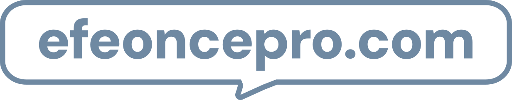

En Microsoft Teams
Revisión de resultados

Efeonce Insights · ahora
Tu reporte de la semana está listo
-
+22 %
tráfico orgánico
Tu día a día con Efeonce
¿Cómo trabajamos contigo?
A lavista
Cada cosa en su herramienta y todo a la vista en tu panel.
